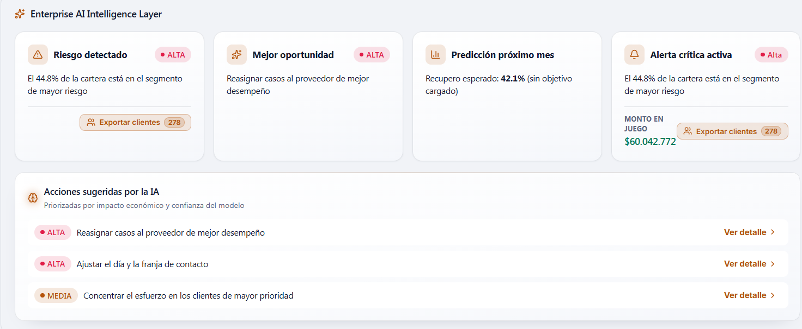

Decision engine
Payment probability, expected recovery, risk score, right-party contact probability, estimated days to payment and work priority. Seven interfaces that any screen can query; none computes anything on its own.
Projects
A collections intelligence platform. It takes an organization's delinquent portfolio, estimates which accounts will pay and when, and orders daily work by expected recovery instead of by debt age.
The problem
The daily question for a collections team isn't who owes the most, but who is worth calling today.
In most operations, the portfolio is sorted by amount or days past due, and deciding whom to contact is left to each agent's experience. The outcome is familiar: the same effort goes into accounts that would have paid anyway and accounts that are unrecoverable, while the ones that needed timely follow-up go cold.
CollectIQ changes the sorting criterion. For each account it estimates payment probability by time bucket —at 5, 10, 15, 20, 30 and 30+ days—, expected recovery net of the cost of working it, and a priority that combines delinquency, amount and probability. On top of that, it proposes the next best action for each account.
The portfolio comes in via Excel, CSV or CRM sync, and the system automatically suggests how to map the file's columns to its data model, which is where half of these projects usually die.
Capabilities
Every module runs on the same decision engine, so every screen answers with the same logic.
Payment probability, expected recovery, risk score, right-party contact probability, estimated days to payment and work priority. Seven interfaces that any screen can query; none computes anything on its own.
A digital twin of the portfolio lets you test strategies before running them: what happens if you change the contact criteria, refinance a segment or move the monthly target. Includes forecasting against targets and backtesting.
Natural-language questions about the portfolio, answered with the organization's real data. Every answer comes with an evidence panel showing where each number came from, so the recommendation can be audited rather than taken on faith.

Architecture decision
The design decision that most shapes the future of a product like this one.
All calculation logic sits in its own layer, decoupled from React. No UI component contains formulas: when a screen needs a probability or a recommendation, it asks the engine. The engine exposes a stable contract —which function is called and what shape its output takes—, and behind that contract the implementation can change completely.
That means a trained model can replace any of the current calculations without touching a single line of UI code. Today the estimates are reference formulas, documented and tested; once there's enough data to train on, the internals get swapped and the platform never notices.
The same layer is shared between the frontend and the server functions, so a calculation never gives two different results depending on where it runs.

Stack
Managed infrastructure and a lean dependency set, so the team spends its time on the domain, not on keeping servers alive.
Have a project like this?
CollectIQ is our own product, and the same team and the same standards apply to the software we build for clients. If your operation has a data and decision-making problem, tell us about it.